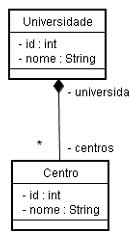

Informações
| Tipo: | Tutorial |
|---|---|
| Data de Publicação: | 07/06/2007 |
| Revisado em: | 07/06/2007 |
Vote!
Tags Relacionadas
Comentários ( 7 )
Imprimir
Mapeando Relacionamentos Entre Classes com Anotações Hibernate - Parte 1
por:
Raphaela Galhardo Fernandes (raphaela@jeebrasil.com.br)
Gleydson Lima (gleydson@jeebrasil.com.br)
Este tutorial e o próximo destinam-se a apresentar alguns exemplos de mapeamentos de associações/relacionamentos entre classes, usando anotações Hibernate. Serão apresentados exemplos de mapeamentos dos relacionamentos
many-to-many, one-to-many, one-to-one ou many-to-one.
Neste tutorial serão apresentados apenas os mapeamentos dos relacionamentos many-to-many e one-to-many.
Para baixar o tutorial no formato PDF,
Clique Aqui
1. Introdução
O termo associação é utilizado para se referir aos relacionamentos entre as entidades. Os relacionamentos n-para-n, n-para-1 e 1-para-n são os mais comuns entre as entidades de um banco de dados.
2. Associações 1-n (one-to-many)
Para exemplificar o relacionamento 1-n, considere o relacionamento entre a entidade Centro e a entidade Universidade da Figura 1. O relacionamento diz que uma universidade possui um conjunto de n centros e um centro está associado a apenas uma única universidade. Considere as classes de domínio Java de uma universidade e de um centro, respectivamente, mostradas na Listagem 1 e na Listagem 2. Ambas as classes já possuem o seu mapeamento via anotações inserido.

Figura 1 - Relacionamento entre Centro e Universidade
package br.com.jeebrasil.hibernate.anotacoes.dominio;
import java.util.Collection;
import javax.persistence.*;
import org.hibernate.annotations.Cascade;
import org.hibernate.annotations.CascadeType;
@Entity @Table(schema="anotacoes")
public class Universidade {
@Id
@GeneratedValue(strategy = GenerationType.SEQUENCE)
@Column(name="id_universidade")
private int id;
private String nome;
@OneToMany(mappedBy="universidade", fetch = FetchType.LAZY)
@Cascade(CascadeType.ALL)
private Collection centros;
//Métodos getters e setters
//...
}
Listagem 1 – Classe de Domínio: Universidade
package br.com.jeebrasil.hibernate.anotacoes.dominio;
import javax.persistence.*;
import org.hibernate.annotations.Cascade;
import org.hibernate.annotations.CascadeType;
import org.hibernate.annotations.Fetch;
import org.hibernate.annotations.FetchMode;
@Entity @Table(schema="anotacoes")
public class Centro {
@Id @GeneratedValue(strategy = GenerationType.SEQUENCE)
@Column(name="id_centro")
private int id;
private String nome;
@ManyToOne(fetch = FetchType.EAGER)
@JoinColumn(name="id_universidade",
insertable=true, updatable=true)
@Fetch(FetchMode.JOIN)
@Cascade(CascadeType.SAVE_UPDATE)
private Universidade universidade; //Métodos getters e setters
//...
}
Listagem 2 – Classe de Domínio: Centro
As classes de domínio Universidade e Centro são mapeadas para as tabelas universidade e centro, que podem ser criadas na base de dados a partir dos scripts apresentados na Listagem 3 e na Listagem 4, respectivamente.
CREATE TABLE anotacoes.universidade ( id_universidade integer NOT NULL, -- Identificador da tabela nome character(100) NOT NULL, -- Nome da universidade CONSTRAINT pk_universidade PRIMARY KEY (id_universidade) ) WITHOUT OIDS; ALTER TABLE anotacoes.universidade OWNER TO postgres; COMMENT ON COLUMN anotacoes.universidade.id_universidade IS 'Identificador da tabela'; COMMENT ON COLUMN anotacoes.universidade.nome IS 'Nome da universidade';
Listagem 3 – Script para a Criação da Tabela universidade
CREATE TABLE anotacoes.centro
(
id_centro integer NOT NULL, -- Identificador da tabela
nome character(100) NOT NULL, -- Nome do centro
id_universidade integer NOT NULL,
-- Identificador da universidade a que o centro pertence
CONSTRAINT pk_centro PRIMARY KEY (id_centro),
CONSTRAINT fk_centro_universidade FOREIGN KEY (id_universidade)
REFERENCES anotacoes.universidade (id_universidade) MATCH SIMPLE
ON UPDATE NO ACTION ON DELETE NO ACTION
)
WITHOUT OIDS;
ALTER TABLE anotacoes.centro OWNER TO postgres;
COMMENT ON COLUMN anotacoes.centro.id_centro IS 'Identificador da tabela';
COMMENT ON COLUMN anotacoes.centro.nome IS 'Nome do centro';
COMMENT ON COLUMN anotacoes.centro.id_universidade IS 'Identificador da universidade a que o centro pertence';
Listagem 4 – Script para a Criação da Tabela centro
A classe de domínio Universidade é a que possui um mapeamento do tipo 1-n através do atributo coleção de centros. O seu mapeamento foi feito na Listagem 1 a partir da anotação @OneToMany. Como a coleção conterá objetos do tipo Centro, então está classe também deverá ser uma classe persistente da aplicação. Na anotação @OneToMany, existe um atributo denominado mappedBy que deverá receber como valor o nome do atributo na classe Centro (classe dos tipos de objetos da coleção) que se refere à classe Universidade (onde há o mapeamento 1-n). Em outras palavras, a tabela centro possui uma chave estrangeira para a tabela universidade, representada pelo atributo Universidade universidade da classe Centro, que corresponderá ao atributo mappedBy da anotação @OneToMany, ou seja, mappedBy=”universidade”.
Já o atributo fecth indica quando o conteúdo do atributo será trazido da base de dados. Pode assumir dois valores:
- FetchType.EAGER: sempre que o objeto "pai" for trazido da base de dados, o atributo mapeado com fetch=FetchType.EAGER fará com que o seu conteúdo também seja trazido;
- FetchType.LAZY: sempre que o objeto "pai" for trazido da base de dados, o atributo mapeado com fetch=FetchType.LAZY fará com que o seu conteúdo somente seja trazido quando acessado pela primeira vez.
A anotação @Cascade, também utilizada no mapeamento da coleção centros, serve para indicar com que ação em cascata o relacionamento será tratado, ou seja, especifica quais operações deverão ser em cascata do objeto pai para o objeto associado. Por exemplo, pode assumir alguns dos valores abaixo:
- CascadeType.PERSIST: os objetos associados vão ser inseridos automaticamente quando o objeto "pai" for inserido;
- CascadeType.SAVE_UPDATE: os objetos associados vão ser inseridos ou atualizados automaticamente quando o objeto "pai" for inserido ou atualizado;
- CascadeType.REMOVE: os objetos associados ao objeto "pai" vão ser removidos, quando o mesmo for removido;
- CascadeType.REPLICATE: Se o objeto for replicado para outra base de dados, os filhos também serão;
- CascadeType.LOCK: Se o objeto for reassociado com a sessão persistente, os filhos também serão;
- CascadeType.REFRESH: Se o objeto for sincronizado com a base de dados, os filhos também serão;
- CascadeType.MERGE: Se um objeto tiver suas modificações mescladas em uma sessão, os filhos também terão;
- CascadeType.EVICT: Se o objeto for removido do cache de primeira nível, os filhos também serão;
- CascadeType.ALL: junção de todos os tipos de cascade.
Para ilustrar o efeito da anotação @Cascade(CascadeType.ALL), considere o exemplo da Listagem 5, onde, inicialmente, um objeto Universidade é criado. Em seguida, dois objetos da classe Centro também são criados, recebem valores para seu atributo nome e são associados ao objeto universidade, que é posteriormente persistido.
//...
Universidade univ = new Universidade();
univ.setNome("Universidade Federal do Rio Grande do Norte");
Centro centro1 = new Centro();
centro1.setNome("Centro de Tecnologia");
centro1.setUniversidade(univ);
Centro centro2 = new Centro();
centro2.setNome("Centro de Humanas");
centro2.setUniversidade(univ);
univ.setCentros(new HashSet()); univ.getCentros().add(centro1);
univ.getCentros().add(centro2);
session.save(univ);
//...
Listagem 5 – Exemplo de Persistência OneToMany. Efeito da anotação @Cascade(CascadeType.ALL)
A Listagem 6 apresenta o resultado da persistência do objeto universidade presente na Listagem 5. Observa-se, que a partir do atributo cascade com valor CascadeType.ALL, inicialmente é inserida uma linha na tabela universidade e em seguida duas linhas na tabela centro. Vale salientar, que na hora de inserir as linhas na tabela centro, como os objetos que as representavam foram associados ao objeto universidade, automaticamente, o Hibernate atribui como valor de suas chaves estrangeiras, o valor gerado para a chave primária da linha criada na tabela universidade.
Hibernate: insert into anotacoes.Universidade (nome, id_universidade) values (?, ?) Hibernate: insert into anotacoes.Centro (nome, id_universidade, id_centro) values (?, ?, ?) Hibernate: insert into anotacoes.Centro (nome, id_universidade, id_centro) values (?, ?, ?)Listagem 6 – Resultado da Execução do Código da Listagem 5
O atributo centros da classe Universidade foi mapeado com a anotação @OneToMany e com o atributo fecth=FetchType.EAGER. A Listagem 7 apresenta um exemplo de consulta a uma linha na tabela universidade com valor de chave primária igual a 100. Na Listagem 8 e na Listagem 9 estão os resultados da consulta considerando o atributo fecth da coleção definido como FetchType.EAGER e como FetchType.LAZY, respectivamente.
//... Session session = sf.openSession(); //Consulta de uma linha na tabela universidade //com valor de chave primária = 100 Universidade univ = (Universidade)session.get(Universidade.class, 100); session.close(); //...
Listagem 7 – Consulta para Ilustrar o Uso do Atributo fecth
Hibernate: select universida0_.id_universidade as id1_3_1_, universida0_.nome as nome3_1_, centros1_.id_universidade as id3_3_, centros1_.id_centro as id1_3_, centros1_.id_centro as id1_1_0_, centros1_.nome as nome1_0_, centros1_.id_universidade as id3_1_0_ from anotacoes.Universidade universida0_ left outer join anotacoes.Centro centros1_ on universida0_.id_universidade=centros1_.id_universidade where universida0_.id_universidade=?
Listagem 8 – Resultado da Execução do Código da Listagem 7 com fecth=FetchType.EAGER
Hibernate: select universida0_.id_universidade as id1_3_0_, universida0_.nome as nome3_0_ from anotacoes.Universidade universida0_ where universida0_.id_universidade=?
Listagem 9 – Resultado da Execução do Código da Listagem 7 com fecth=FetchType.LAZY
A partir destes resultados, é possível observar que realmente com o valor FetchType.EAGER, o SQL gerado pelo Hibernate na consulta de uma universidade realiza um left outer join com a tabela centro já trazendo os dados da coleção, podendo ser desnecessário. Por outro lado, utilizando FetchType.LAZY, a consulta retorna apenas os dados referentes à universidade, de forma que se fossem necessários os dados da coleção, bastaria acessar o atributo que a representa no objeto universidade.
A Listagem 10 apresenta um exemplo com a coleção centros mapeada com FetchType.LAZY. Neste exemplo, a mesma consulta à universidade de chave primária igual a 100 é feita e em seguida um acesso ao atributo centros, através da linha do código fonte univ.getCentros().iterator(). O resultado pode ser visto na Listagem 11, em que duas SQLs são geradas, uma gerada no momento da consulta à linha na tabela universidade de identificador igual a 100 e a outra no momento em que se itera a coleção centros do objeto anteriormente recuperado.
//... Session session = sf.openSession(); //Consulta de uma linha na tabela universidade //com valor de chave primária = 100. //fetch=FetchType.LAZY. Não traz dados da coleção centros Universidade univ = (Universidade)session.get(Universidade.class, 100); //Acesso à coleção centros, de forma que os dados serão buscados univ.getCentros().iterator(); session.close(); //...
Listagem 10 – Consulta para Ilustrar o Uso do Atributo fecth=FetchType.LAZY
Hibernate: select universida0_.id_universidade as id1_3_0_, universida0_.nome as nome3_0_ from anotacoes.Universidade universida0_ where universida0_.id_universidade=? Hibernate: select centros0_.id_universidade as id3_1_, centros0_.id_centro as id1_1_, centros0_.id_centro as id1_1_0_, centros0_.nome as nome1_0_, centros0_.id_universidade as id3_1_0_ from anotacoes.Centro centros0_ where centros0_.id_universidade=?
Listagem 11 – Resultado da Execução do Código da Listagem 10
3. Associações n-1 (many-to-one)
O relacionamento n-1 será apresentado a partir do relacionamento existente entre as classes Centro e Universidade, mostrado também na Figura 1. Neste caso, o relacionamento está presente no mapeamento da classe Centro, como mostrado na Listagem 2, a través da anotação @ManyToOne. Para facilitar o entendimento, o trecho de mapeamento many-to-one do atributo universidade da classe Centro pode ser visto também na Listagem 12.
//...
@Entity @Table(schema="anotacoes")
public class Centro {
//...
@ManyToOne(fetch = FetchType.EAGER)
@JoinColumn(name="id_universidade",
insertable=true, updatable=true)
@Fetch(FetchMode.JOIN)
@Cascade(CascadeType.SAVE_UPDATE)
private Universidade universidade; //Métodos getters e setters
//...
}
Listagem 12 - Mapeamento ManyToOne
A anotação @ManyToOne também possui o atributo fetch, que possui o mesmo comportamento apresentado anteriormente. A anotação @JoinColumn é utilizada para informar qual o nome da coluna que corresponde à chave estrangeira do mapeamento, no caso, name=”id_universidade”. Nesta anotação também são aceitáveis os atributos insertable e updatable que se assumirem true indica que o atributo deve ser inserido (insertable) ou atualizado (updatable) no momento em que o objeto que possui o relacionamento é inserido ou atualizado, respectivamente. O atributo do relacionamento não será inserido se insertable = false e não será atualizado se updatable = false.
Outra anotação utilizada é a @Fecth, que define como o atributo mapeado será recuperado da base de dados. Pode assumir três valores:
- FetchMode.JOIN: utiliza outer join para carregar entidades ou coleções mapeadas;
- FetchMode.SELECT: utiliza um novo select para carregar entidades ou coleções mapeadas;
- FetchMode.SUBSELECT: utiliza uma consulta subselect adicional para carregar coleções adicionais. Não permitido para mapeamentos ManyToOne.
A Listagem 13 apresenta uma consulta à base de dados do centro com valor de chave primária igual a 110. A Listagem 14 apresenta o resultado da consulta com o mapeamento do atributo universidade da classe Centro utilizando a anotação @Fecth recebendo com valor FetchMode.JOIN. Pode-se observar que uma única consulta é feita, realizando um JOIN entre as tabelas centro e universidade. Já na Listagem 15, o resultado da consulta com o uso da anotação @Fetch com o valor FetchMode.SELECT resulta em duas consultas SELECT à base de dados, uma para buscar as informações do centro de chave primária igual a 110 e a outra para buscar as informações da universidade associada.
//... Session session = sf.openSession(); //Consulta de uma linha na tabela centro //com valor de chave primária = 110 Centro centro = (Centro)session.get(Centro.class, 110); session.close(); //...
Listagem 13 – Consulta para Ilustrar o Uso da Anotação @Fecth
Hibernate: select centro0_.id_centro as id1_1_1_, centro0_.nome as nome1_1_, centro0_.id_universidade as id3_1_1_, universida1_.id_universidade as id1_3_0_, universida1_.nome as nome3_0_ from anotacoes.Centro centro0_ left outer join anotacoes.Universidade universida1_ on centro0_.id_universidade=universida1_.id_universidade where centro0_.id_centro=?
Listagem 14 – Resultado da Execução do Código da Listagem 13 com @Fetch(FetchMode.JOIN)
Hibernate: select centro0_.id_centro as id1_1_0_, centro0_.nome as nome1_0_, centro0_.id_universidade as id3_1_0_ from anotacoes.Centro centro0_ where centro0_.id_centro=? Hibernate: select universida0_.id_universidade as id1_3_0_, universida0_.nome as nome3_0_ from anotacoes.Universidade universida0_ where universida0_.id_universidade=?
Listagem 15 – Resultado da Execução do Código da Listagem 13 com @Fetch(FetchMode.SELECT)
4. Conclusões
Neste tutorial foram apresentados como se mapear relacionamentos entre classes do tipo muitos para um e um para muitos. Para quem já trabalhou com o mapeamento objeto relacional com Hibernate usando arquivos XML’s, percebe-se que a introdução das anotações facilitou bastante o trabalho.
No próximo tutorial, serão apresentados os mapeamentos de relacionamentos muitos para muitos e um para um.
Comentários (7)
- Poderiam colocar um fonte de uma aplicação exemplo para download.
- postado por Diogo A. Monteiro em 11/09/2007 às 23:21
- Tutorial bastante didático. Porém fiquei com uma dúvida: "Nesta anotação também são aceitáveis os atributos insertable e updatable que se assumirem true indica que o atributo deve ser inserido (insertable) ou atualizado (updatable) no momento em que o objeto que possui o relacionamento é inserido ou atualizado, respectivamente. " - Isso não seria a mesma idéia da notação @Cascade(CascadeType.SAVE_UPDATE)?
- postado por Alan em 03/10/2007 às 23:21
- Você está falando da anotação JoinColumn? Não é a mesma idéia do cascade. Quando insertable = true, significa que o valor da chave estrangeira mapeada pelo ManyToOne e JoinColumn vai ser setada no banco de dados na tabela que tem a chave estrangeira. Com o cascade, = CascadetType.SAVE_UPDATE, se a linha na entidade não referenciada não existisse, seria criada uma linha na tabela referenciada e com insertable = true, também o valor da chave estrangeira. O mesmo com updatable, mas no contexto de atualização.
- postado por Raphaela em 03/10/2007 às 23:21
- Quando vão colocar o seguinte tutorial, many-to-many?
- postado por Raphael Domingues em 16/11/2007 às 23:21
- Gostaria de saber como seria o mapeamento se fossem schemas postgres diferentes ..
- postado por Mauro em 08/05/2008 às 23:21
- Só não funciona, de resto tá bom. Exception in thread "main" org.hibernate.AnnotationException: Use of @OneToMany or @ManyToMany targeting an unmapped class: br.com.jeebrasil.hibernate.anotacoes.dominio.Universidade.centros[br.com.jeebrasil.hibernate.anotacoes.dominio.Centro]
- postado por Joaquim em 29/08/2008 às 23:21
- Não funciona ou você não soube colocar para funcionar??
- postado por Ricardo em 24/11/2008 às 23:21